transformer study
transformer的提出主要是解决RNN（循环神经网络）和CNN（卷积神经网络），但是这两个都有缺点，transformer的出现就是为了解决这些缺点
对于RNN来说必须一个字一个字地读，并不可以并行操作，下一个字的读取必须等待上一个的完成很耗时，并且由于必须建立起联系，所以当句子太长时，RNN会出现记忆缺失的情况
所以其提出就是为了靠用纯粹的注意力带替换以往循环结构处理的模型
结构
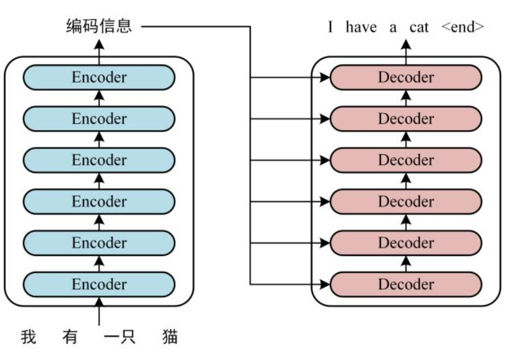
这个图是transformer在中英文翻译时的结构图，主要由两部分组成Encoder和Decoder，各包含了6个block
首先会获取输入句子中每个单词的表示向量X（X是由单词的Embedding和单词位置的Embedding相加而来）
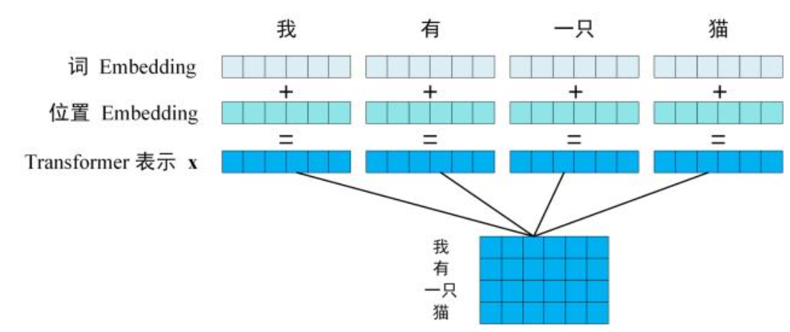
然后将得到的单词的表示向量矩阵传入到Encoder里面，经过Encoder的6个block之后会得到句子中所有单词的编码信息矩阵，单词向量用X~n×d~表示，n为句子的单词个数，d为向量的维度(论文中的d为512),每个Encoder block输出的矩阵的维度和输入的一致
随后将Encoder输出的编码信息矩阵传入Decoder中，Decoder会根据当前已经翻译过的单词来翻译下一个单词x，而在翻译到单词x的时候会把剩下没翻译到的内容mask遮挡起来
1 | 对于transformer有强大的自注意力机制，训练的时候是不会一个一个训练的而是一次性输入同时训练 |
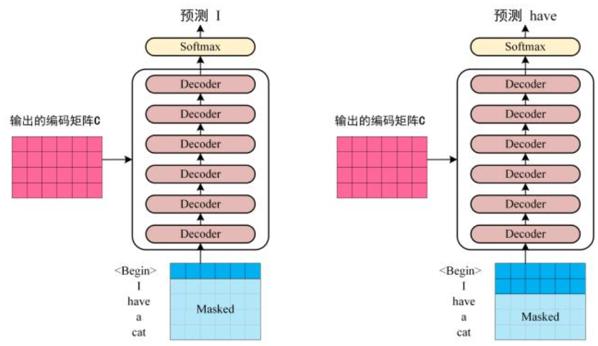
然后整个流程大致是这样的：
| 位置 | 输入（右移一位） | 期望输出 |
|---|---|---|
| 1 | <begin> | “I” |
| 2 | <Begin> I | “have” |
| 3 | <Begin> I have | “a” |
| 4 | <Begin> I have a | “cat” |
输入部分
在transformer中单词的输入表示X由其单词的Embedding和位置Embedding相加得到
1、单词Embedding
这个可以用别人训练好的来用，特点是向量是固定的，一个词对应着一个固定的向量，但是对于多义词无法区分。也可以在transformer中训练得到，特点是可以跟着模型一块训练，初始值虽然是固定的，但是经过注意力层之后会变成动态，对于多义词的处理可以根据上下文来区分
2、位置Embedding 简称PE
因为transformer没有像RNN那样的按顺序一个一个读的机制，而是并行处理，如果没有位置信息的话，你打我和我打你对于模型来说是一样的.
在transformer中对于PE是计算出来的，不同于单词Embedding，如果依旧靠固定值或者训练出来来分配位置，会导致很多问题，例如单词数量大于训练位置数量，就算你的位置向量很多，但是很多情况使用不到后面的那些位置，会浪费参数和显存
计算公式是这样的：
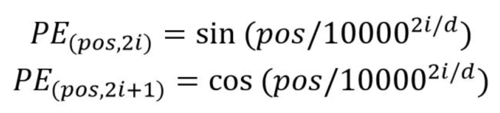
pos表示单词在句子中的位置(0,1,2,3…)，d表示PE的维度（和词Embedding一样），i表示向量的维度索引
2i表示偶数维度用正弦函数，2i+1表示奇数维度用余弦函数，
优点：
不像固定分配，对于上面的情况可以算出超出预期的位置
可以让模型更容易地算出相对位置，对于任意固定距离k，PE(pos+k)可以表示成PE(pos)的线性变换，即存在一个矩阵（只与k有关）：
这步的证明可以用到三角函数和差公式展开
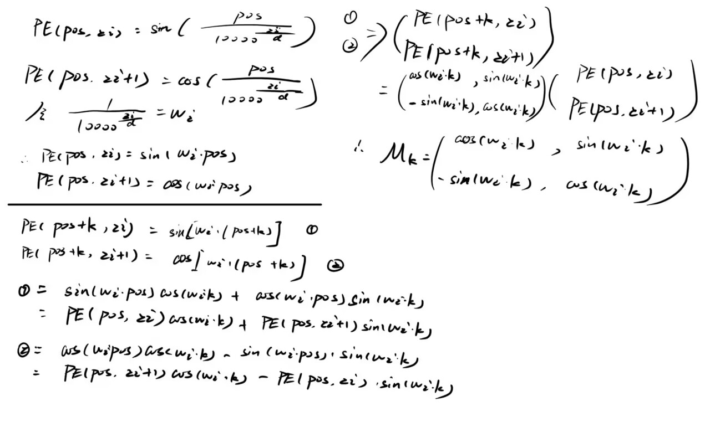
所以无论是第三位和第六位的变换，还是第50位和第53位的变换，它们之间的位置编码变换时完全相同的矩阵
Self-Attention(自注意力机制)
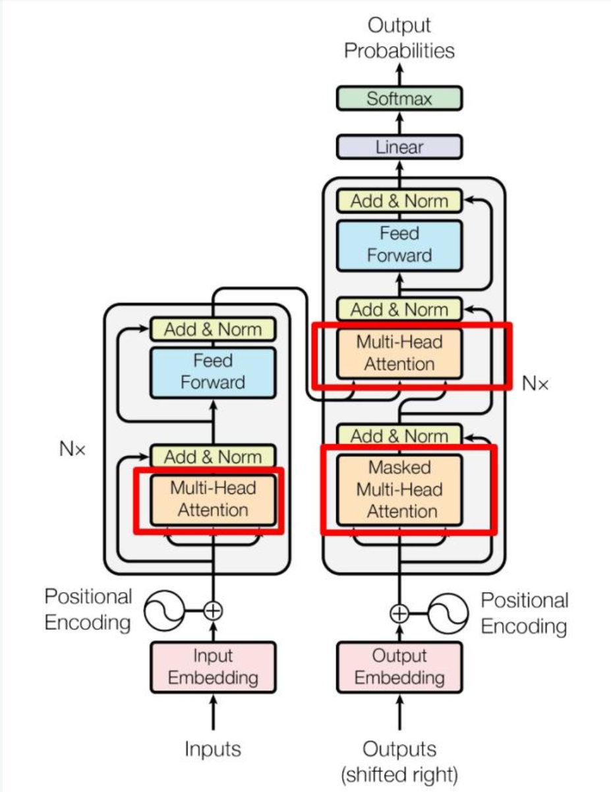
这张图是transformer的内部结构，左边是Encoder block，右边是Decoder block，transformer正是由Encoder、Decoder两大部分堆叠而成：
1 | ┌─────────────────────────────────┐ |
Encoder Block内部结构
一个Encoder block按照顺序经过：
1 | 输入 --> Multi-Head Attention --> Add&Norm --> Feed Forward --> Add&Norm --> 输出 |
1 | Multi-Head Attention：多头注意力机制，让每个词看到句子中所有其它的词，并计算它们之间的关联程度 |
Decoder Block内部结构
Decoder 的block比Encoder多了一步
1 | 输入 --> Masked Multi-Head Attention --> Add&Norm --> Multi-Head Attention --> Add&Norm --> Feed Forward --> Add&Norm --> 输出 |
两个Attention的原因：
第一个(Masked)
只看到已经生成的词，不看后面的词，在生成第i个词的时候，让模型根据已经生成的1~i-1个词来决策
第二个
可以看到Encoder的全部输出，将Decoder已经生成的内容和原始输入句子进行对比(cat去寻找Encoder的输出中的猫)
所以Decoder实际上是做了两件事：内部自注意、和输入的交叉注意
关于Multi - Head Attention
其实就是多个Self-Attention并行工作
1 | Self-Attention 1 ──┐ |
每个Attention head关注的是不同的维度
self-Attention结构
1、输入X获得Q,K,V
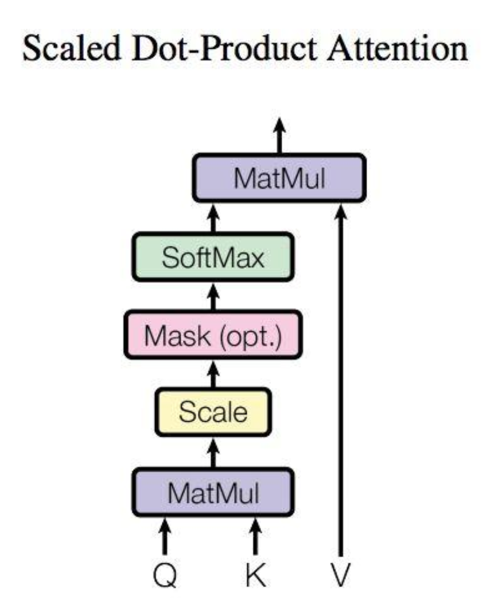
Self-Attention的输入是矩阵，可以是传入的表示矩阵X，也可以是编码信息矩阵，假设句子中有n个单词吗，每个单词的向量维度是d，那么X的形状是n×d。
这里通过三个可学习的权重矩阵进行线性变换：
Q = X*W~Q~ (n×d~k~)
K = X*W~K~ (n×d~k~)
V = X*W~V~ (n×d~v~)
其中W~Q~、W~K~、W~V~的形状都是d×d~k~，通常d~k~=d~v~=d，它们都是模型参数，在训练中被学习
对于同一个输入X，经过不同的权重矩阵变换后，可以得到三种不同的表示：
Q(Query，查询)：这个词想问什么，在寻找什么信息
K(Key，键)：这个词能被搜到什么，有什么特征可以被匹配
V(Value，值)：这个词携带的新消息，若其被选中，可以贡献什么内容
搜索词和标签匹配度越高，被选中的概率越大，V就越相关
2、计算注意力分数（Q乘以K的转置）
Scores = Q*K^T^(n×n)，
对于每一个 元素来说，第i行第j列的值=Q的第i行 和K 的第j行的内积，表示单词i对单词j的关注程度
举个例子：
句子：“I love cats” 有三个单词：
1 | (q1*k1 q1*k2 q1*k3) |
第一行表示I对所有单词的关注度，以此类推
3、缩放（除以）
在上面的举证乘法中知道，既然最后变成了(n×n)，那么必然是列和列相乘，但d的值会对后续很有影响，这里假设每一项q~i~，k~i~都是服从均值为0，方差为1的正态分布，内积求和后对应的总均值为0，标准差为，根据3σ，内积的值大约在[-,]之间波动，d~k~越大，内积的绝对值越大，但是内积过大会导致Softmax输出趋近独热向量：
如果说d~k~太大，会导致分布及其不合理出现0和1的趋近，这样会导致梯度消失，从而导致模型无法学习
4、Softmax归一化
Softmax对矩阵每一行进行独立处理，是指变成概率分布，且加起来和为1
归一化后的矩阵A表示成：第i行表示：单词i对所有单词的注意力权重分配
例如这里I把70%的注意力放在了love上面，以此类推
5、乘以V得到最终输出
Z = A*V （n×d~v~）
第i个单词的输出z~i~等于：
用注意力权重对所有单词的Value做加权求和
z3 = 0.05*v1 + 0.8*v2 + 0.15*v3
cats的最终表示是 = 5%的I信息 + 80%的love信息 + 15%的cats信息
所以综上所述：
然后回到Multi-Head Attention
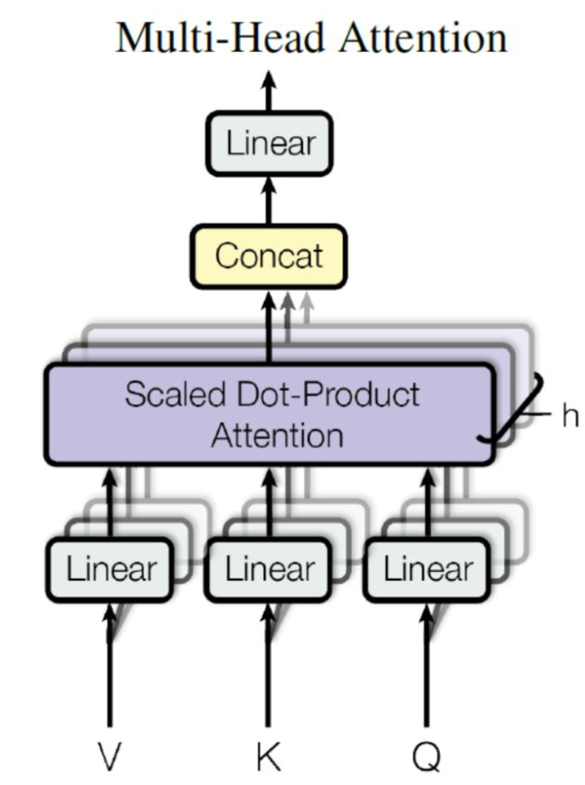
可以看到这边有h个不同的Self-Attention，将X分别放入得到8个不同的Z矩阵，下面是h=8的情况，最后Multi-Head Attention 会将他们拼在一起(Concat)，传入到一个Linear层，得到最后的输出Z
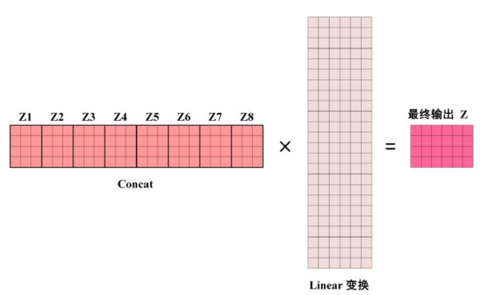
最终输出的矩阵Z和矩阵X的维度一致
Add & Norm
其中的SubLayer(X)可以是Multi-Head Attention 或者 Feed Forward
整个流程是先Add后Norm
Add（残差连接）
1 | 输出 = Attention（输入） + 输入 |
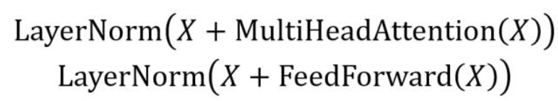
将注意层的输出加上原始输入，这是因为transformer很深(通常有6~12层)，如果每一层都只是纯粹变换的话，信息会在层层传递中逐渐丢失(网络退化)。而残差就可以让原始信息可以直接跳过某些层，保证浅层学到的东西不会在深层被破坏
X是输入 ，SubLayer(X)是子层的输出。
关于梯度消失的问题
在反向传播的时候，梯度会逐层往回传，每经过一层，梯度都要乘该层的权重矩阵，但是如果权重矩阵的值较小，导致梯度会逐渐缩小，可能到最前面几层就接近0了，导致浅层参数几乎不更新
所以在残差连接中，提供了一条路径：
后面的偏导值很小，但是始终有一个1来保底，保证梯度可以顺利传回浅层
Norm：Layer Normalization
对每个样本的特征维度进行归一化，让数值分布稳定在均值为0，方差为1附近，这样之后可以防止在计算大量矩阵乘法的过程中数值爆炸或者消失，使收敛更快
x：待归一化的向量（Add之后的输出）
μ：该向量所有元素的均值
：所有元素的方差
：一个极小值，防止除以0
：可学习得缩放和平移参数，让模型自己决定最终得尺度和偏移，如果没有这一步所有层的输出都会被强制压成均值为0，方差为1，表达能力会受限
Feed Forward
分成三步：升维、ReLU、降维
假设输入x形状为n×d~model~
W1的形状为512*2048
所以h的形状：n*2048，维度从512拓展到了2048，拓展了四倍
对于h中的每个元素，负数变成0，整数不变
然后降维
W2的形状为2048*512，所以最后转变由降维到512，和输入x一致
在这里升维到2048，在高维空间中数据更容易被分开，ReLU可以在2048维空间制造出更多的折面，使得模型的表达能力更强
在FFN中W1和W2是共享的，对于n个单词用的都是相同的W1,W2，但是词与词之间没有任何交互，因为这个过程在Multi -Head Attention已经完成了
上面基本可以完成Enocder block，接收一个X矩阵，返回一个O矩阵（同维度），通过多个Encoder block 叠加就可以组成一个Encoder
看到Decoder结构：
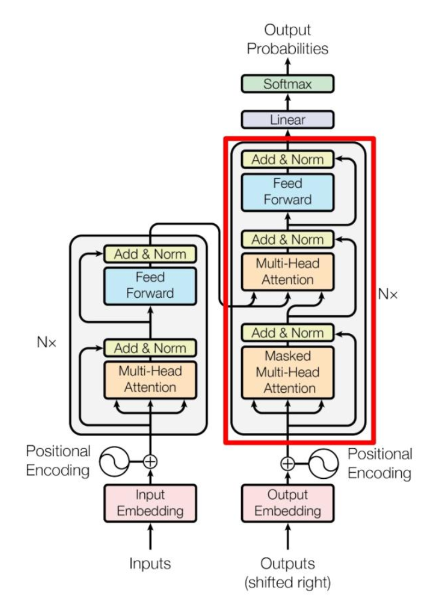
Encoder将整个句子编码成了一个矩阵C，Decoder的任务是将一个词一个词的生成目标句子。每生成一个词就将它拼到已有序列后面，然后再预测下一个词
和Encoder就两个区别：
1、第一个Attention加了Mask
2、第二个Attention的K,V来自Encoder(Cross-Attention)
Masked Self-Attention
翻译是从左到由一个一个生成的，预测第i个词时，只能看到1到i-1个词，不能看到后面的词
以"I have a cat"举例 ，Mask矩阵是5×5的
第一行只可以看到<Begin>自己
第二行I可以看到<Begin>和自己，以此类推
第五行cat可以看到所有词
而Mask这个矩阵加在了之后，Softmax之前
softmax了里面就会含有−∞这一元素，也就是被遮挡，而在归一化中
，所以注意力权重就会变成0，只会注意到自己，和之前的内容，最后乘以V得到输出Z
第二个Attention: Cross-Attention
Q源于第一个Attention的输出Z，K和V来自Encoder的最终输出C
Encoder中的输出C包含了原句子中的完整语义信息，Decoder每生成一个词都要参考原句子的信息，例如生成cat的时候，需要知道句子中有猫这个概念
Q表示我想翻译什么，KV表示原句子中有什么
Q和K的转置的乘法，其实就相当于问现在要翻译的内容和原句子的哪些词最相关
1 | Q: 来自 Z，形状 n × d_model → 乘以 W_Q → n × d_k（每个头） |
这里区分n和m，因为中英文对应的单词数并不一样，经过多层的Decoder后
得到了最终输出矩阵形状为n×d~model~
最后利用Softmax预测输出单词
1、线性层(Linear / Dense Layer)
将每个位置的512维向量，映射到词表大小的维度上
W~vocab~的形状：30000*512，所以最终logits的形状：n*30000
logits就是原始分数(未进行归一化)
2、Softmax归一化
对logits的每一行进行Softmax，将原始分数变成概率分布